CSS3 Animations
--self--
--self--
Animações em CSS3
--self--
--self--
Transformations géométriques 2D
-webkit-transform: rotate(90deg);
-webkit-transform: scale(0.5);
-webkit-transform: skew(20deg, 20deg);
liste complète des transformations 2D:
rotate, scale, skew, translate, matrix
2D geometric transforms
Full list of 2D transform functions:
--self--
Transformações geométricas 2D
Lista completa de funções de transformação 2D:
--self--
1. CSS3 Transitions
2. CSS3 Animations
3. CSS3 Transforms in 2D
1. Transições em CSS3
2. Animações em CSS3
3. Transformações 2D em CSS3
Transformations 3D en CSS3
3D transforms
in CSS3
Transformações 3D
em CSS3
Transformations géométriques 3D
translateX, Y, Z, rotateX, Y, Z, matrix3d
-webkit-transform: translateZ(150px) /* first picture */
-webkit-transform: translateZ(-150px) /* second picture */
-webkit-transform: rotateY(360deg) /* their container */
3D geometric transforms
--self--
Transformações geométricas em 3D
--self--
La perspective
Ce n'est pas ce qu'on veut: il manque la perspective! Cliquer pour la rajouter.
-webkit-perspective: 1000px;
Perspective
That is not what you wanted: there is no perspective!
Click to add it.
--self--
Perspectiva
Não é o que você queria: Não há perspectiva!
Clique para adicionar.
--self--
SVG: path - the all-purpose tool
L
- line
C
- cubic bézier
Q
- quadratic bézier
A
- elliptic arc
M
- marker (new pen position)
z
- to close the path
--self--
--self--
--self--
--self--
--self--
--self--
use:
--self--
SVG: path - uma ferramenta para qualquer propósito
L
- linha
C
- bézier cúbica
Q
- bézier quadrática
A
- arco elíptico
M
- marker (new pen position)
z
- para fechar o path
--self--
--self--
--self--
--self--
--self--
--self--
use:
--self--
SVG: Transformations géométriques 2D
transform = "translate(30, 0)"
transform = "rotate(90, 100, 100)"
transform = "scale(0.5)"
liste complète des transformations 2D:
translate, rotate, scale, skewX, skewY, matrix
SVG: geometric transforms in 2D
full list of 2D transforms:
--self--
--self--
SVG: transformações geométricas em 2D
lista completa de transformações 2D:
--self--
--self--
SVG: controlling the animation in javascript
--self--
--self--
--self--
--self--
SVG: controlando a animação em javascript
--self--
--self--
--self--
--self--
objets HTML uniquement, aucun contrôle de trajectoire
DÉCLARATIF
SVG + SMIL
courbes, trajectoires courbes mais préprogrammées
Canvas + Javascript
boucle d'animation avec modèle et interactions libres, 2D uniquement
PROGRAM.
WebGL + Three.js
full 3D
CSS shaders
shaders 3D paramétrables depuis les CSS
5 HTML5 animation techniques
--self--
only HTML objects, no control over trajectory
DECLARATIVE
--self--
curves, curved trajectories, but only preprogrammed ones
--self--
animation loop with interactive world model, 2D only
PROGRAM.
--self--
full 3D
CSS Shaders
3D shaders controllable from CSS
5 técnicas de animação em HTML5
--self--
somente objetos HTML, sem controle sobre a trajetória
DECLARATIVA
--self--
curvas, trajetórias em curva, mas já preprogramadas
--self--
loop de animação interativo, somente 2D
PROGRAM.
--self--
totalmente 3D
CSS Shaders
3D shaders controllable from CSS
Canvas: drawing primitives
Canvas: princípios de desenho
Canvas: afficher des images
BITMAP
var img = new Image();
img.onload = function()
{
ctx.drawImage(img, x,y, w,h);
};
img.src = "myimage.png";
SVG
var data = "<svg>...</svg>";
var svg = new Blob([data],{type:"image/svg+xml"});
var DOMURL = self.URL || self.webkitURL;
var url = DOMURL.createObjectURL(svg);
var img = new Image();
img.onload = function()
{ ctx.drawImage(img, x, y, w, h); };
img.src = url;
Canvas: displaying pictures
--self--
--self--
--self--
--self--
! Chrome only
! inline SVG only
! no SMIL anim.
Canvas: mostrando figuras
--self--
--self--
--self--
--self--
! somente Chrome
! somente inline SVG
! sem anim. SMIL
Canvas: transformations géométriques
ctx.translate(x, y); // dessiner ici
Translation
ctx.rotate(rads); // dessiner ici
Rotation
ctx.scale(sx, sy); // dessiner ici
Zoom
utiliser ctx.save() et ctx.restore() pour gérer l'état du contexte
Canvas: geometric transforms
--self--
draw here
Translation
--self--
draw here
Rotation
--self--
draw here
Scale
use
--self--
and
--self--
to handle drawing ctx. state
Canvas: transformações geométricas
--self--
desenhe aqui
Mudar de posição
--self--
desenhe aqui
Rotação
--self--
desenhe aqui
Aumentar/Diminuir
use
--self--
e
--self--
para manipular o estado do ctx.
Canvas: composing geometric transforms
1. The drawing
2. Center
3. Scale
4. Rotate
5. Position
Replay the transforms in reverse order:
draw from here
Canvas: compondo transformações geométricas
1. O desenho
2. Centro
3. Escala
4. Rotação
5. Posição
Repita as transformações em ordem inversa:
desenhe deste ponto
Canvas: les boucles d'animation
function runAnimation()
{
world.Draw(context); // votre code de dessinwebkitRequestAnimationFrame(runAnimation);
}
function runWorld()
{
world.Step(1000/60); // votre code de simulation
setTimeout(runWorld, 1000/60);
}
Le navigateur optimise les appels à requestAnimationFrame
Canvas: animation loops
your drawing code
--self--
your simulation code
The browser optimizes requestAnimationFrame calls
Canvas: loops de animação
seu código do desenho
--self--
seu código de simulação
O navegador otimiza as chamadas requestAnimationFrame
// THREE.PerspectiveCamera( FOV, viewAspectRatio, zNear, zFar );
var camera = new THREE.PerspectiveCamera(35, width/height, 1, 10000);
camera.position.z = 300;
THREE.js: camera, lights, action !
Create a WebGL renderer
Add it to the document
whereeveryouwant
Create a camera
THREE.js: luz, câmera, ação!
Cria uma renderizador WebGL
Adiciona-o ao documento
whereeveryouwant
Cria uma câmera
Une lumière
var light = new THREE.DirectionalLight(0xffffff, 1); //color, intens.
light.position.set(1, 1, 0.3); // direction
Quelque chose à afficher
var texture = THREE.ImageUtils.loadTexture('Fernando Togni.jpg');
var cube = new THREE.Mesh(
new THREE.BoxGeometry(100, 100, 100),
new THREE.MeshLambertMaterial({map: texture}) );
Une scène avec tout ça
var scene = new THREE.Scene();
scene.add(cube);
scene.add(light);
Let there be light
Something to display
A scene with all of this
Permita que haja luz
Algo para mostrar
Uma cena com tudo isso
... et action !
renderer.render(scene, camera);
... and action !
--self--
... e ação!
--self--
La boucle d'animation
function runAnimation(t)
{
// animer les objets en fonction du temps
cube.rotation.y = t/1000;
cube.position.x = ...
renderer.render(scene, camera); // afficherrequestAnimationFrame(runAnimation); // boucler
}
The animation loop
animate your objects depending on time
--self--
display
--self--
and loop
O loop de animação
anima seus objetos dependendo do tempo
--self--
mostrar
--self--
e loop
THREE.js: charger un modèle
Format ouvert de modèles 3D: COLLADA (.dae)
var loader = new THREE.ColladaLoader();
loader.load("Android.dae", function(collada)
{
var model = collada.scene;
model.position.set(x, y, z); // votre position
model.rotation.set(φ, θ, ψ); // angles d'Euler
scene.add(model);
},
function progress(p) {} );
utilisez: SKETCHUP
THREE.js: load a model
Open 3D model data format: COLLADA (.dae)
your position
Euler angles
use
--self--
THREE.js: carregue um modelo
Abra um modelo 3D no formato: COLLADA (.dae)
your position
Euler angles
use
--self--
WebGL + THREE.js: résumé
renderer = new THREE.WebGLRenderer(...)
camera = new THREE.PerspectiveCamera(...)
light = new THREE.DirectionalLight(...)
new THREE.ColladaLoader().load(modelUrl, finishedCallback)
scene = new THREE.Scene()
scene.add(...); // lights, models, ...
window.requestAnimationFrame(animate);
function animate(t)
{
// animation: modifier la scène en fonction du temps t ici
renderer.render(scene, camera);
window.requestAnimationFrame(animate);
}
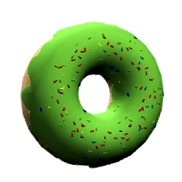
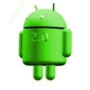
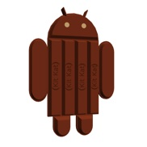
WebGL+ THREE.js: summary
// animation: change the scene here depending on time t
WebGL+ THREE.js: sumário
// animação: mude a cena aqui dependendo to tempo t
Filtres CSS custom: Des shaders GLSL en CSS
Custom CSS filters
GLSL shaders in CSS
Custom CSS filters
GLSL shaders in CSS
Filtres CSS: nouveau mais classique
-webkit-filter:
CSS filters: new but familiar
--self--
--self--
--self--
--self--
--self--
CSS filters: new but familiar
--self--
--self--
--self--
--self--
--self--
GLSL: the ideal language for geometry
Vectors and matrices:
--self--
--self--
--self--
--self--
--self--
Examples:
--self--
--self--
--self--
--self--
Geometry functions:
--self--
--self--
--self--
--self--
--self--
GLSL: the ideal language for geometry
Vectors and matrices:
--self--
--self--
--self--
--self--
--self--
Examples:
--self--
--self--
--self--
--self--
Geometry functions:
--self--
--self--
--self--
--self--
--self--
Les shaders à l'oeuvre
Vertex Shader: enroulement cylindrique
Vertex Shader: perturbation sinusoïdale
Pixel Shader: ombrage Lambert et transparence
The shaders behind the scene
Vertex Shader: cylinder wrap
Vertex Shader: sinusoidal flutter
Pixel Shader: Lambert shading and see-through effect
The shaders behind the scene
Vertex Shader: cylinder wrap
Vertex Shader: sinusoidal flutter
Pixel Shader: Lambert shading and see-through effect
Vertex shader: en entrée et en sortie
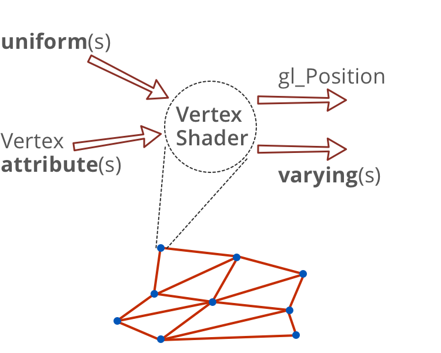
Vertex shader: inputs and outputs
Vertex shader: inputs and outputs
Vertex shader: en entrée et en sortie
// attribut standard
attribute vec4 a_position;
// uniforme standard
uniform mat4 u_projectionMatrix;
// uniforme correspondant à la transformation CSS
uniform mat4 transform;
// uniformes définis par l'utilisateur dans les CSS
uniform vec2 curlPosition;
uniform float curlDirection;
uniform float curlRadius;
// sortie: variant passé au pixel shader
varying vec3 v_normal;
// sortie: variable standard gl_Position
Vertex shader: inputs and outputs
// built-in attribute
// built-in uniform
// uniform representing the CSS transform matrix
// uniforms defined by the user in CSS
// output: variants passed to the pixel shader
// output: built-in variable gl_Position
Vertex shader: inputs and outputs
// built-in attribute
// built-in uniform
// uniform representing the CSS transform matrix
// uniforms defined by the user in CSS
// output: variants passed to the pixel shader
// output: built-in variable gl_Position
Vertex shader: on enroule sur un cylindre
// Valeurs "attributs" standard
attribute vec4 a_position;
// Valeurs "uniforms" standard
uniform mat4 u_projectionMatrix;
// "Uniforms" en provenance des CSS
uniform mat4 transform;
uniform vec2 cylPos;
uniform vec2 N; //dir. d'enroulement
uniform float R; //rayon cylindre// Valeurs "varyings" passées// au pixel shader
varying vec3 v_normal;
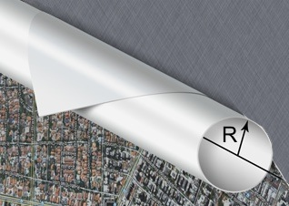
void main() {
// distance à l'axe du cylindre
float d = dot(a_position.xy - cylPos, N);
// Projection du vertex sur l'axe du cylindre
vec3 C = vec3(a_position.xy - d * N, R);
// Vertex enroulé sur le cylindre
vec3 V = C + R * vec3( sin(d/R) * N.x,
sin(d/R) * N.y,
-cos(d/R));
// vecteur normal à la surface du cylindre
v_normal = (C - V) / R;
// On positionne le vertexgl_Position = u_projectionMatrix
* transform * V;}
Vertex shader (part): roll onto a cylinder
// Built-in attributes
// Built-in uniforms
// Uniforms passed in from CSS
// curl direction
// curl radius
// Varyings passed
// to pixel shader
// distance to the curl axis
--self--
// Projection of vertex on the curl axis
// Vertex rolled onto the curl
// normal to the cylider surface
// Position the vertex.
--self--
GLSL Vertex shader (part): roll onto a cylinder
// Built-in attributes
// Built-in uniforms
// Uniforms passed in from CSS
// curl direction
// curl radius
// Varyings passed
// to pixel shader
// distance to the curl axis
--self--
// Projection of vertex on the curl axis
// Vertex rolled onto the curl
// normal to the cylider surface
// Position the vertex.
--self--
Pixel Shader: en entrée et en sortie
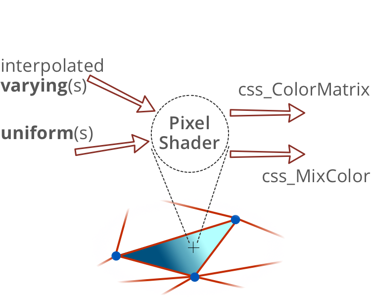
Pixel shader: inputs and outputs
Pixel shader: inputs and outputs
Pixel shader: Lambert lighting
// Varyings passed from vertex shader
// Uniforms passed from CSS
--self--
--self--
GLSL Pixel shader: Lambert lighting
// Varyings passed from vertex shader
// Uniforms passed from CSS
--self--
--self--
Les 5 techniques d'animation en HTML5
CSS3
objets HTML uniquement, aucun contrôle de trajectoire
DÉCLARATIF
SVG + SMIL
courbes, trajectoires courbes mais préprogrammées
Canvas + Javascript
boucle d'animation avec modèle et interactions libres, 2D uniquement
PROGRAM.
WebGL + Three.js
full 3D
CSS shaders
shaders 3D paramétrables depuis les CSS
5 HTML5 animation techniques
--self--
only HTML objects, no control over trajectory
DECLARATIVE
--self--
curves, curved trajectories, but only preprogrammed ones
--self--
animation loop with interactive world model, 2D only
PROGRAM.
--self--
full 3D
CSS Shaders
3D shaders controllable from CSS
5 técnicas de animação em HTML5
--self--
somente objetos HTML, sem controle sobre a trajetória
DECLARATIVA
--self--
curvas, trajetórias em curva, mas já preprogramadas
--self--
loop de animação interativo, somente 2D
PROGRAM.
--self--
totalmente 3D
CSS Shaders
3D shaders controllable from CSS
Contact info:
--self--
, Developer Relations, Google
--self--
--self--
This presentation is available online:
--self--
--self--
--self--
And much more on:
--self--
--self--
--self--
Contato:
--self--
, Developer Relations, Google
--self--
--self--
Esta apresentação está disponível online:
--self--
--self--
--self--
E muito mais em:
--self--
--self--
--self--
 suivant
suivant 


 SKETCHUP
SKETCHUP 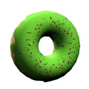
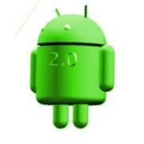
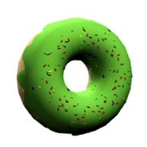
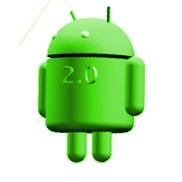


 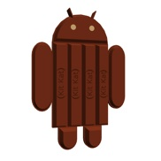
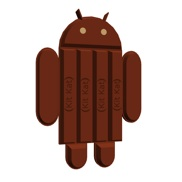

 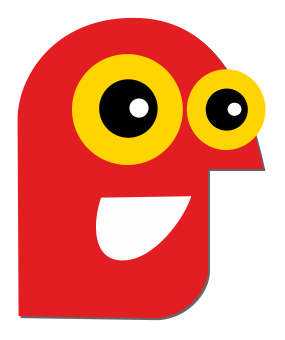
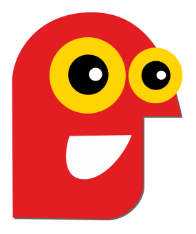